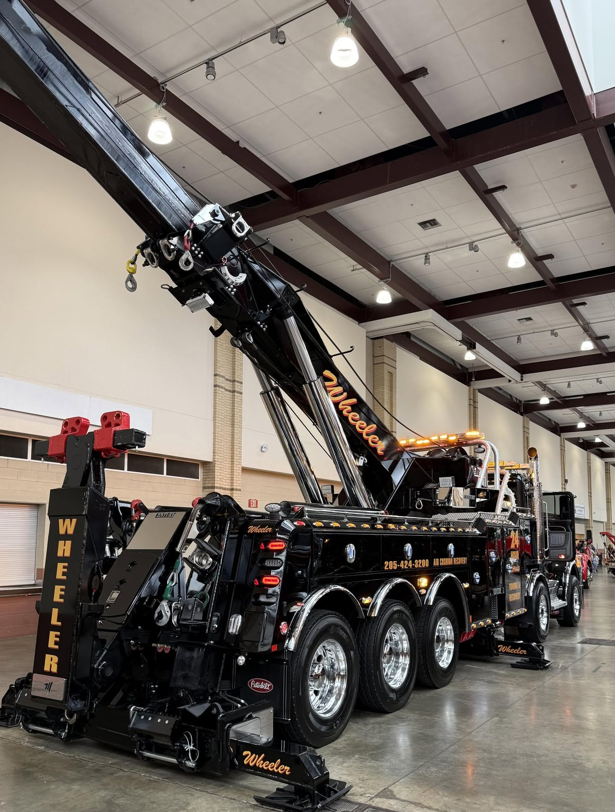
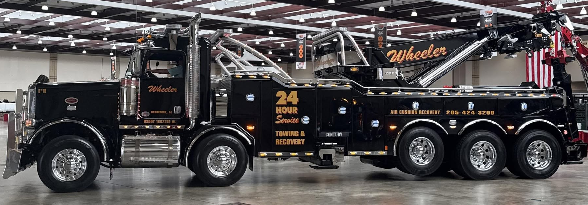
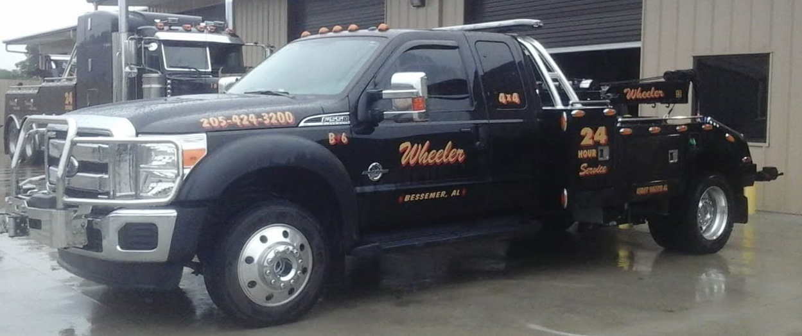

Heavy-Duty Towing
Heavy-duty towing and recovery for commercial trucks, buses and other large vehicles across Alabama. Call our 24-hour dispatch to discuss the situation.
Learn more →Family-owned since three generations and serving Alabama since 1967. More than 30 trucks. Light-, medium- and heavy-duty towing, rotator recovery, accident recovery and equipment transportation from Bessemer and Alabaster.
From everyday cars and classic vehicles to semi-trucks, buses and challenging recovery scenes, find the right towing service. View all services →
Heavy-duty towing and recovery for commercial trucks, buses and other large vehicles across Alabama. Call our 24-hour dispatch to discuss the situation.
Learn more →Heavy-duty rotator services and rotator/crane recovery support for demanding recovery situations. Call dispatch with vehicle and site details.
Learn more →Everyday and specialty passenger-vehicle towing, including classic cars. Call dispatch to discuss your vehicle, pickup point and destination.
Learn more →Equipment transportation for owners, contractors and businesses. Contact Wheeler with equipment dimensions, pickup and destination details for a quote.
Learn more →Recovery support for accident-damaged, disabled or difficult-to-access vehicles. For urgent recovery needs, call dispatch rather than submit a form.
Learn more →Complex recovery for disabled commercial trucks, buses and large vehicles in difficult roadside or off-road positions.
Learn more →
Wheeler Wrecker Service brings family-owned experience, a fleet of more than 30 trucks, and around-the-clock towing response to communities throughout Alabama.
From daily drivers and classic cars to commercial trucks.
Rotator and crane recovery support for demanding situations.
Towing support for trucking companies and business operators.
See the equipment that supports Wheeler’s towing and recovery work. See the gallery →


Wheeler serves Bessemer, Birmingham, Alabaster, Helena, Pelham, Calera, McCalla and surrounding communities in Jefferson and Shelby counties. Call for availability anywhere in Alabama or for service outside the state.
24-hour towing and recovery dispatch
24-hour towing and recovery dispatch
Truck fleets, equipment owners, repair facilities and commercial operators can inquire about ongoing towing and recovery support.
Immediate assistance is handled by phone. Call the Wheeler location nearest you to discuss your towing or recovery request.